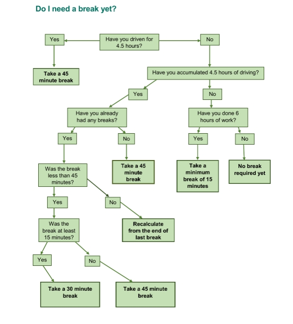

Labor regulations¶
Regulations implemented in LION:
- Breaks from Driving: A driver must take a break of at least 45 minutes after a driving period of no more than 4.5 hours.
If two breaks is required, the first one has to be 60 minutes and the remaining breaks must be 45 minutes.
- Breaks from duty: A driver must take a break of 30 minutes after being on duty not longer than 6 hours. This is no longer required if
Breaks from Driving has been taken.
Daily Driving Limit: The maximum daily driving time is 9 hours.
Daily shift duration: Maximum shift duration is 12 hours.
Key driver regulations in the UK
The key driver labor regulations in the UK for truck drivers concerning maximum driving time, break time rules, and working time rules are as follows (please visit GOV.UK):
Breaks from Driving: A driver must take a break of at least 45 minutes after a driving period of no more than 4.5 hours. This break can be split into two parts: the first break being at least 15 minutes and the second at least 30 minutes, distributed over the 4.5-hour period
Daily Driving Limit: The maximum daily driving time is 9 hours, which can be extended to 10 hours but no more than twice in a fixed week.
Weekly Driving Limit: The maximum weekly driving limit is 56 hours in a fixed week, which starts at 00:00 on Monday and ends at 24:00 on the following Sunday.
Two-Weekly Driving Limit: Over any two-week period, the maximum driving time should not exceed 90 hours.
Daily Rest: A driver must take a minimum of 11 continuous hours of rest daily, which can be reduced to 9 continuous hours up to three times between weekly rest periods. This rest period can be split into two parts, with the first being at least 3 hours long and the second at least 9 hours long, and must be completed within 24 hours of the end of the previous daily or weekly rest period.
Multi-Manning Daily Rest: For multi-manned vehicles, a daily rest of at least 9 hours must be taken within a 30-hour period starting from the end of the last daily or weekly rest period.
Ferry/Train Daily Rest: Regular daily rest periods (of at least 11 hours) or weekly rest periods can be interrupted no more than twice for other activities not exceeding 1 hour in total, provided the driver accompanies a vehicle traveling by ferry or train and has access to a sleeper cabin, bunk, or couchette. This interruption is allowed only if the ferry or train leg of the journey is scheduled for 8 hours or more.
These regulations are designed to ensure driver safety and compliance with legal standards in the UK.

{kind=link}